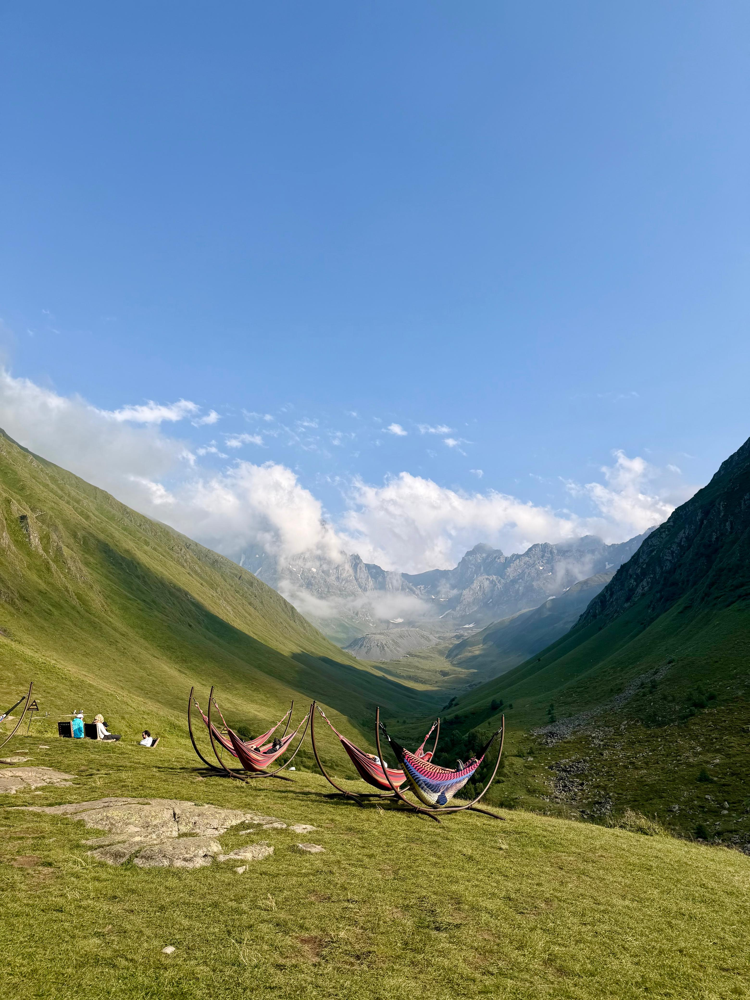
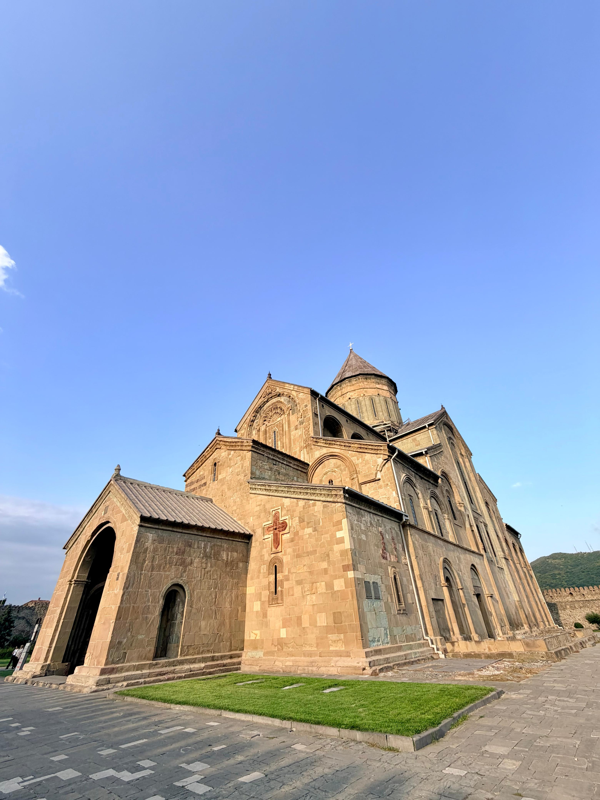
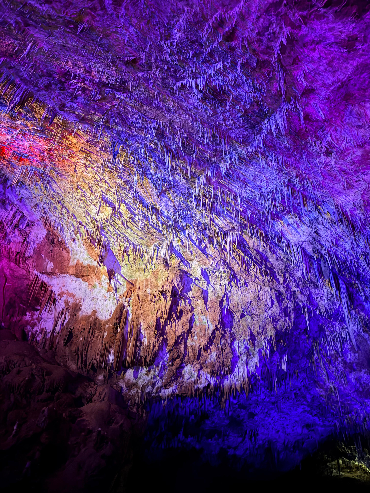
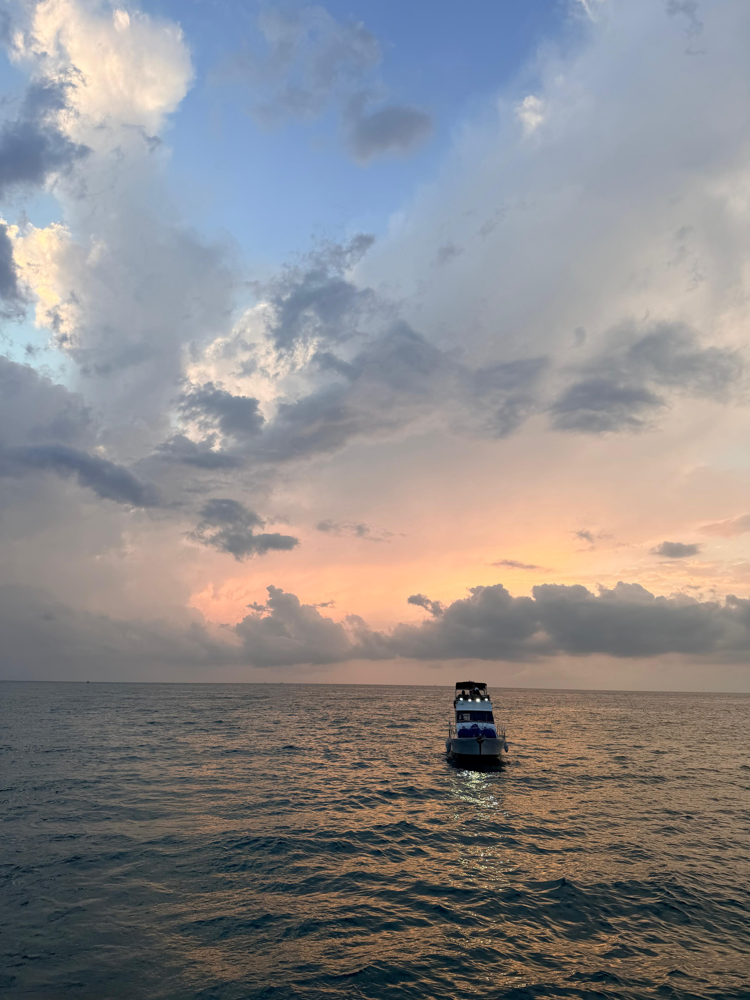
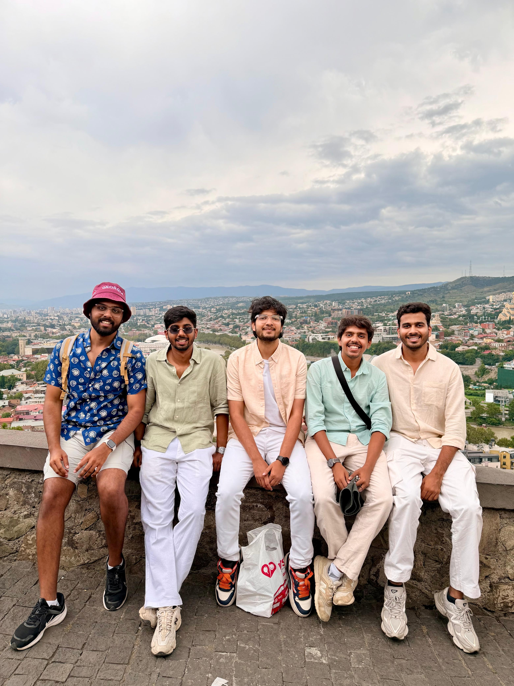
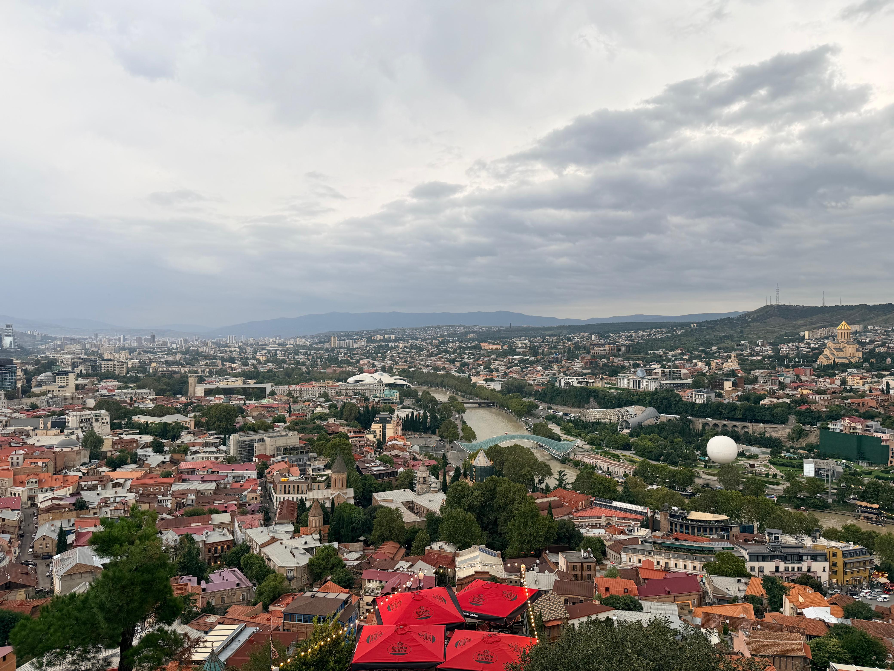
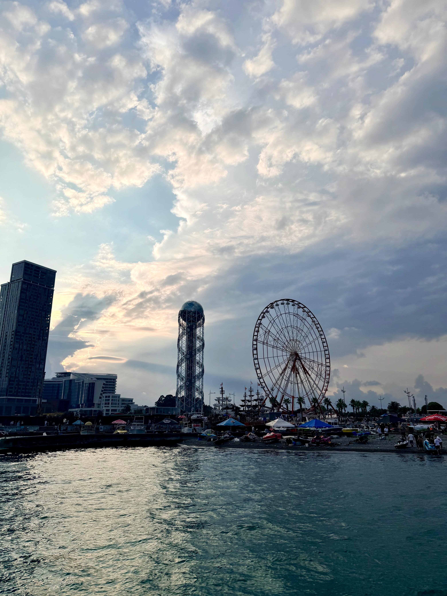
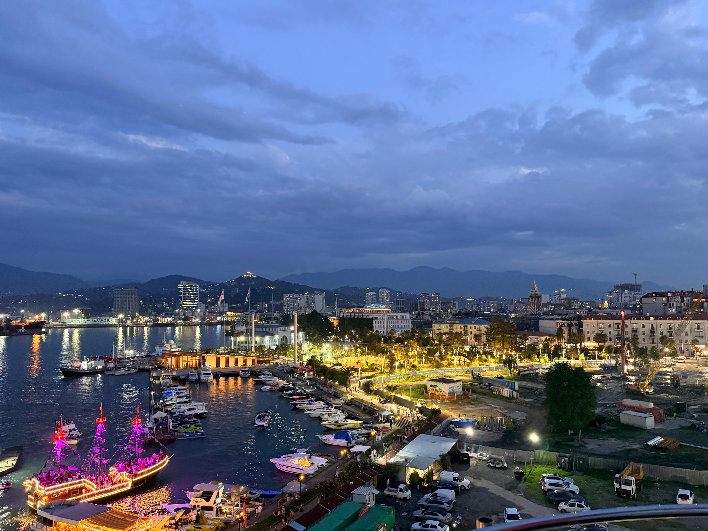
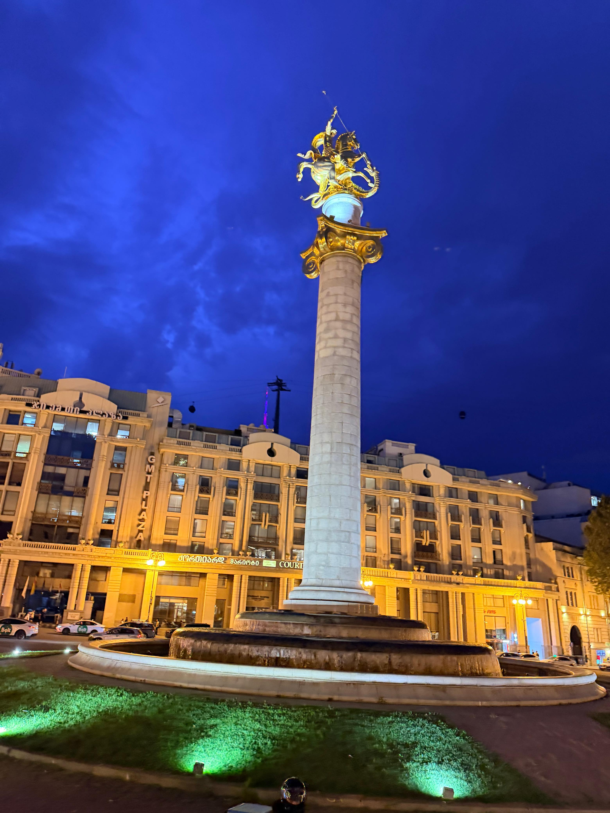
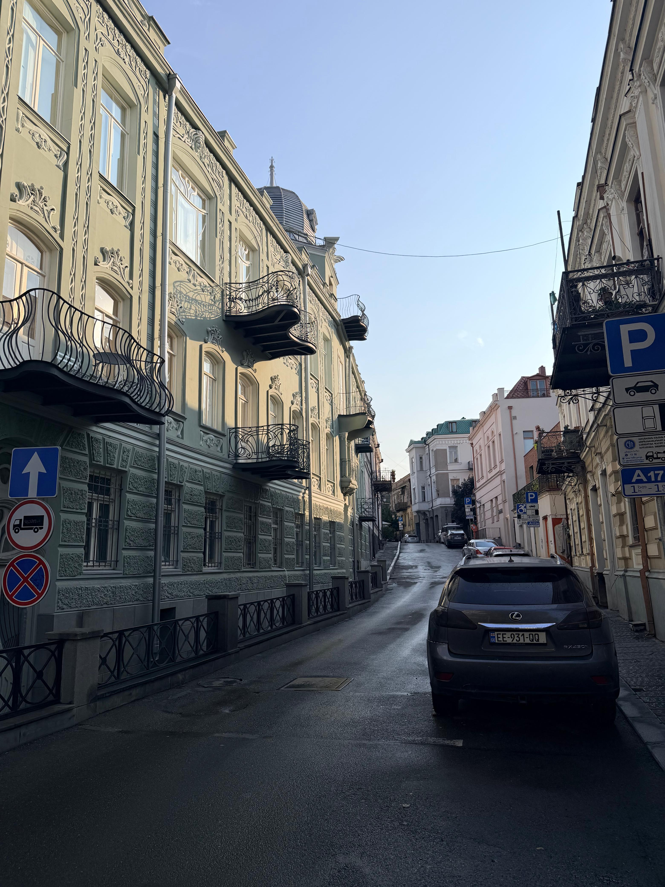

🇻🇳
Vietnam Diaries
9 days from Hanoi's beer street to Halong Bay cruises, cave treks and lantern-lit Hoi An.
Read the Diary →Nine days from the Caucasus peaks of Gudauri and Kazbegi to Kutaisi's canyons, Batumi's boulevard, and Tbilisi's old town.
Tbilisi → Gudauri → Kazbegi → Kutaisi → Batumi → Tbilisi
Self-drive rental car, with local taxis for trailheads and narrow old-town streets
Georgian Lari (GEL)
e-Visa for Indians — waived if you hold a valid US visa
Every stop, every cost, exactly how it happened.

A hammock break partway up the Juta Valley trail.

Svetitskhoveli Cathedral, Mtskheta — genuinely beautiful.

Inside the Prometheus Caves, lit up in shifting colour.

Golden hour on the private yacht ride — the highlight of Batumi.

The whole crew, overlooking Tbilisi from Narikala.





What the itinerary adds up to, per person — flight cost sourced from current India–Tbilisi fare averages since it wasn't in the original diary.
Approximate figures for 2026 — waived visa fees (valid US visa holders) and splitting the rental car across a group are the two easiest ways to bring this down. Flights are the single biggest lever, so book 6–8 weeks out in shoulder season (Apr–May or Sep–Oct) if you can.
9 days from Hanoi's beer street to Halong Bay cruises, cave treks and lantern-lit Hoi An.
Read the Diary →